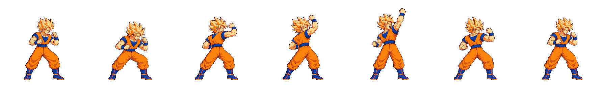
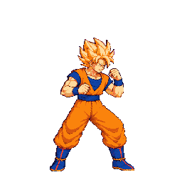

Goku directional normals — relay #44 redraw candidates
This page shows packed crops from one exact 48-color diagnostic atlas, compared at one density with Goku's approved idle02. The diagnostic manifest contains placeholder scale records solely to let the packer render Goku's manually probed head; those placeholders are not evidence and must not ship. The selected source attempts and all other generated attempts remain preserved under raw/_qa_hold/.
Technical status: HOLD on all three; no image approval requested. Astra found the two uppercut strips' guard/recovery anatomy too small, and dSmash's bilateral active frames are clipped at both cell edges. The user decision needed is whether to authorize measured, import-only scale work for uTilt/uSmash and another drawing round for dSmash, or keep these moves on their stand-ins. This round's generation budget has been used.
Approved idle02 reference

uTilt v04 — phases [3,2,2]
Attempt 2 of 2. The angled up-forward rising uppercut is present; active frames are f3 and f4.
Astra: HOLD. Full silhouettes fit and the active overhead fists clear the cell with minimum top margin 25px. Guard/recovery boots and lower body are reduced relative to idle02 and light2/heavy: collar-to-belt about 33±5px, belt 30–33±4px, boot 32–35±4px vs idle 38±5px, 36±4px, 44±4px. No disconnected-anatomy or independent color-boundary issue found. Proposed strike boxes: f3 [144,43,24,22], f4 [158,23,22,21] (±2–4px extremity boundary).



uSmash v04 — phases [3,2,3]
Attempt 2 of 2. The active f3/f4 frames show the angled rising uppercut.
Astra: HOLD. Full silhouettes fit and overhead fists remain within the cell (minimum top margin 25px), but boot size and recovery proportions are small: recovery boot about 29–33px vs idle 44±4px; collar-to-belt about 34±5px vs 38±5px. Proposed strike boxes: f3 [152,59,25,23], f4 [158,23,22,24] (±2–4px extremity boundary).


dSmash v05 — phases [2,2,4]
Attempt 3 of 3, selected after the first v04 pack showed the wide sweep would not fit. Both active frames f2/f3 show the low split sweep with both legs extended.
Astra: HOLD. The active frames reach both sides but occupy x=0–255; outer boot pixels are cut off on both sides. No translation restores the missing pixels. Guard heads and upper-body volume also read larger than idle. Diagnostic-only foot boxes on surviving fragments: f2 left [0,211,55,30], right [211,207,45,30]; f3 left [0,210,48,26], right [207,211,49,30]. They do not cover complete feet and are not final contact data.


Technical evidence
Open the full 48-color diagnostic atlas · anims.json.

The stable audited atlas is art/characters/goku/production/eng112-r2-relay44-atlas/characters/goku/sheet.png; SHA-256 483b083e04618147f6db1d94efab3d241b0f24553450e92f58bad172a80abac6. Metadata SHA-256 6b08d31b1e31c91d96b5f396a8e795298f838da46691c9df7aeff9fe4526f0c2. Audit: Astra's full relay #44 audit. The source candidates remain in raw/_qa_hold/, so the stand-ins remain active. No user drawing approvals or final hitbox overrides are recorded.
This is a decision request through Claude 0 - Approvals, not an image approval request.